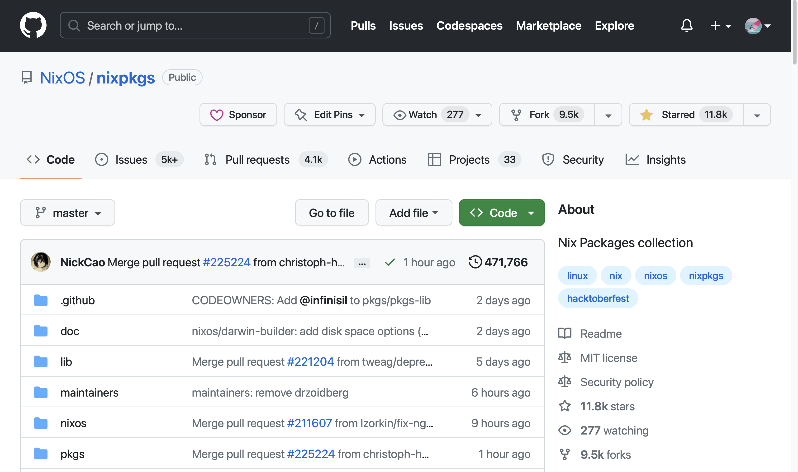

; nix-shell -p go
these 20 paths will be fetched (3.31 MiB download, 26.23 MiB unpacked):
/nix/store/26ry428qjd3bp5xs1dsfk9raq5pygslg-gnused-4.9
...
/nix/store/z5xxcns3wkj9dbikarch3za5sybz5d65-gnu-config-2021-01-25
copying path '/nix/store/vqa7bnaf9s2abd4bjmvygrgvkp6faav3-adv_cmds-119-locale' from 'https://cache.nixos.org'...
...
copying path '/nix/store/8891kzjl7r6q5y6dsxadrn69vrbwygql-xz-5.4.1' from 'https://cache.nixos.org'...
[nix-shell:~]$
Flakes
; git clone https://github.com/HanEmile/lambda
; cd lambda
; nix develop
; python3 solve.py